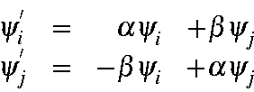
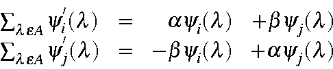
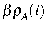
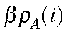
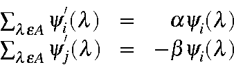
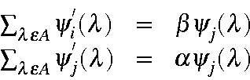

Because of the way LMOs are represented (the five arrays for each set, occupied and virtual), care must be taken to ensure that the two by two rotation is done correctly. For the rotation to be performed, each atomic orbital in yi must be matched with the same atomic orbital in yj . Three distinct situations occur: the same atom might be present in both yi and yj; yi might have an atom which yj does not have; and yj might have an atom which yi does not have. The procedure for dealing with these situations is as follows:
 Simple rotation of the coefficients is performed:
Simple rotation of the coefficients is performed:

 If the product

is above a threshold, then the rotation
If the product

is above a threshold, then the rotation

Again, if the product
 is above a threshold, then the rotation
is above a threshold, then the rotation

At the start of the first SCF calculation, each LMO contains at most two atoms, so the most dramatic effect of matrix element annihilation is to cause the LMOs to expand so that they involve more atoms. In the first few iterations, the number of atoms in each LMO increases rapidly. After about 10-30 iterations, the rate of increase becomes very small, as the size of the LMOs becomes stable.
During the first SCF calculation, the number of atoms in certain LMOs may increase so rapidly that the gap between LMOs might vanish. Any further expansion would then cause vector overwriting to occur. To avoid this happening, the annihilation step is modified as follows: The situation where vector overwriting is about to occur is detected. The degree of mixing of the two LMOs is then halved, and the annihilation is attempted again. If this procedure does not work, then the degree of mixing is halved again. This is done repeatedly until the danger of vector overwriting has been removed. This technique is only used near the end of the SCF calculation; at other times the degree of mixing is simply set to zero.